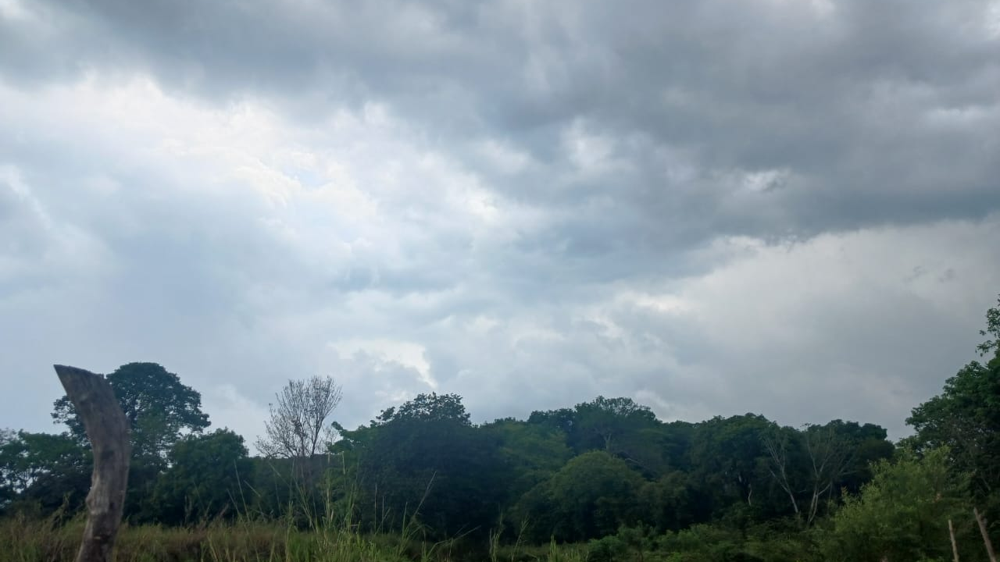
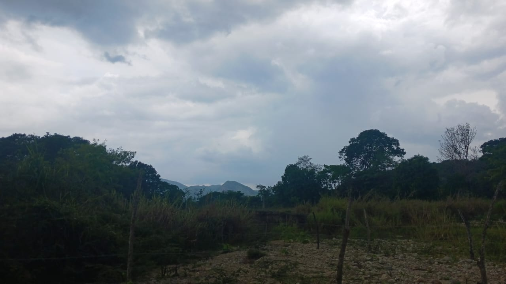
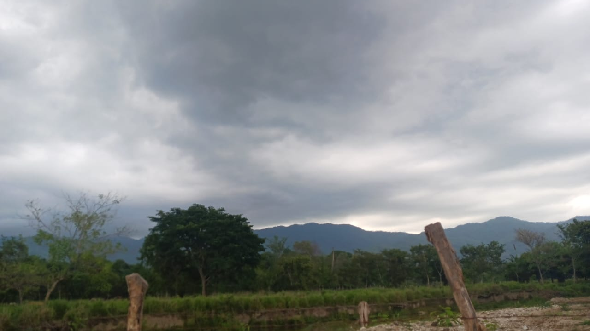
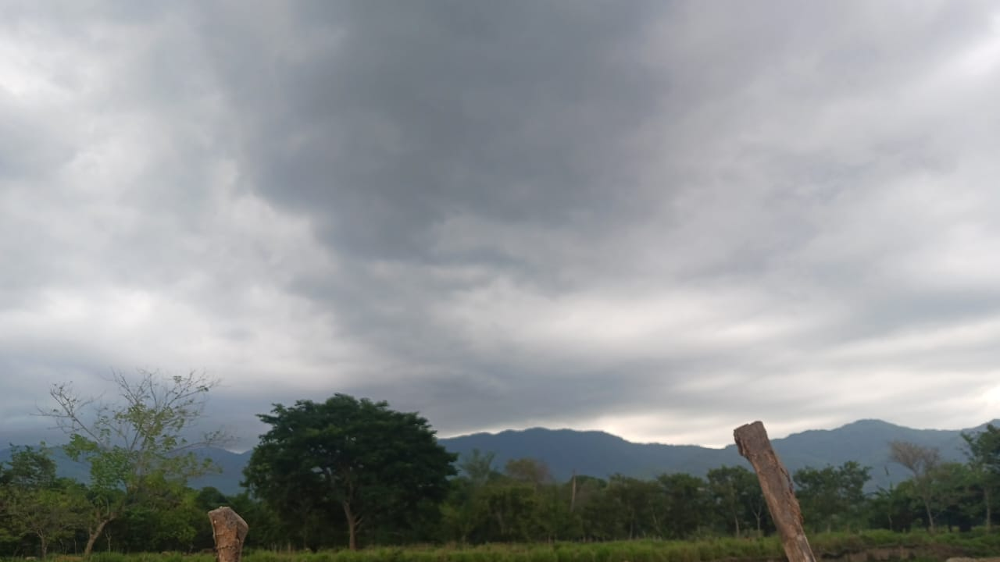

-

Características Climáticas de San Cristóbal.
San Cristóbal, posee un clima cálido, con una temperatura promedio anual de aproximadamente 29 °C. Debido a su altitud, el clima es moderadamente cálido. Durante el año, las temperaturas pueden oscilar entre los 24 °C y los 25 °C, aunque en algunas ocasiones se han registrado descensos más drásticos, alcanzando los 22 °C en las noches más frías del invierno.
-

Lluvias intensas y su impacto en la comunidad
Las precipitaciones en San Cristóbal, pueden ser abundantes, con un promedio anual de 1301.7 mm. En los últimos años, se ha observado un incremento en La intensidad y frecuencia de lluvias lo que ha provocado problemas como inundaciones zonas bajas deslaves en áreas montañosas y daños en la infraestructura vial punto la población ha reportado dificultades en la movilidad debido a caminos deteriorados y la presencia de encharcamiento prolongado.
-

Incremento de temperatura y efectos del cambio climático
si bien San Cristóbal, es conocido por su clima cálido, en los últimos años se ha detectado un ligero aumento de temperatura máxima. Durante el verano algunos días han registrado hasta 35°C, lo que ha generado preocupaciones entre los habitantes, quienes no están acostumbrados a temperaturas tan altas. Este fenómeno podría estar relacionado con el cambio climático y la deforestación en áreas cercanas factores que han alterado el equilibrio climático de la región.
-

Impacto de clima en la Economia y la Sociedad:
El clima no solo afecta el bienestar de la población, sino también la economía local. La agricultura, es una de las principales actividades económicas de la zona, ha sido golpeada por los cambios en la precipitación de las temperaturas extremas. Cultivo como maíz, el café y el frijol han mostrado varias variaciones en su producción, lo que ha afectado los ingresos de los agricultores y ha generado incertidumbre en el sector.